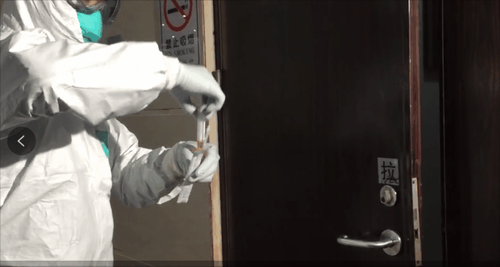
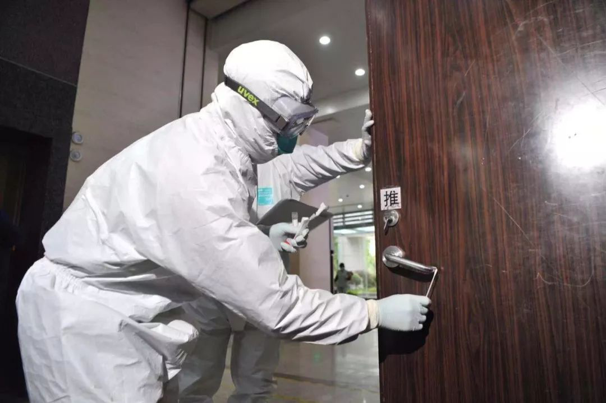
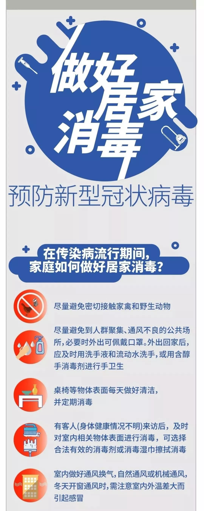
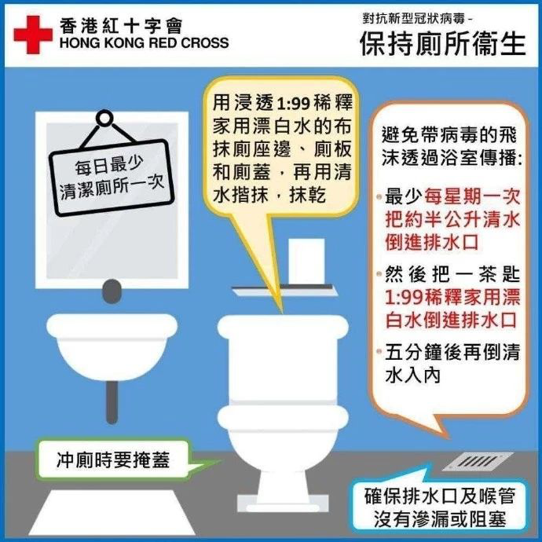
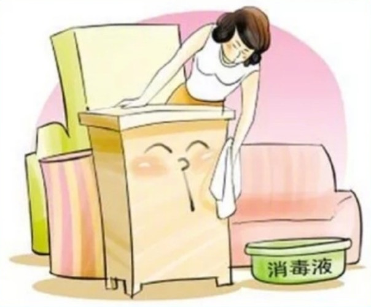

日前，广州市疾病预防控制中心在对新型冠状病毒的肺炎疫情监测中，在一名确诊患者家中门把手上发现了新型冠状病毒的核酸，是广州首次在外环境中发现，提示市民应更注意手卫生。

图为疾控人员的演示过程。来源：广州日报
广州市疾病预防控制中心提醒，家居环境中手机、电话、鼠标键盘、电灯开关、水龙头、门把手等各个经常接触的细节，都有可能成为病毒传播的死角，要高度重视。

图为疾控人员的演示过程。来源：广州日报
如何科学消毒防疫呢？
往下看
小编给你准备了一份
《居家消毒指南》
一起来学习
把居室消毒一遍！
居家消毒指南

来源：中国疾控中心
具体来讲，预防新型冠状病毒，居家清洁消毒应该注意这七点：
一、勤通风
根据具体天气情况，每天通风2~3次，每次不少于半小时，通风时，所有人要注意保暖。
二、勤洗手
外出回家一定要洗手，接触可能被污染的物品后必须洗手，或用含醇的免洗手消毒剂消毒。
三、换洗衣物
外出衣物经常换洗，必要时可以用沸水煮沸消毒（滚筒洗衣机可使用“高温煮洗”功能），或使用84消毒剂等浸泡消毒（按产品说明书使用）。
四、卫生间清洁
上完厕所后，应该盖上马桶盖再冲厕，然后洗手。每天至少清洁一次卫生间，用含氯消毒液对马桶盖、便池及周围、洗手台、门把手等进行消毒。

来源：香港红十字会
五、餐具消毒
把需要消毒的餐具放在一个专用的锅里，煮沸15分钟以上。也可使用有效氯含量为250毫克/升~500毫克/升的含氯消毒剂溶液浸泡15分钟后，再用清水洗净。
六、家用物品及家具表面
沙发、门把手、电话机、桌面等每天经常接触的家用物品和家具表面，每天要保持清洁，必要时（如家中有客人来访等）可用75%酒精或84消毒剂等擦拭消毒（按产品说明书使用）。

（网络配图）
七、口鼻分泌物处理
家人咳嗽、打喷嚏时要用纸巾掩住口鼻，或者把喷嚏打在手肘衣服上；用过的纸巾等垃圾要单独放在一个垃圾袋，并及时处理。